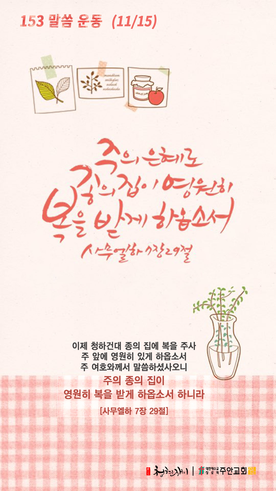

온라인 기도실 안내
2020년 11월15일(일)~11월21일(토)
- 온라인 기도실은 온 회중이 함께 하나님께 나아가는 자리입니다
- 30분 정도 여유를 갖고 하시길 바랍니다
- 말씀과 묵상, 찬양과 기도로 함께 합니다
- 배경 음악이 나올 수 있습니다 볼륨을 조절해주세요
준비가 되셨으면 아래의 버튼을 눌러주세요
찬양, 주의 성실을 찬양하리이다
(시71:22)
- 가사를 묵상하며 읽습니다
아버지 사랑 내가 노래해
아버지 은혜 내가 노래해
그 사랑 변함 없으신
거짓 없으신 성실하신 그 사랑
상한 갈대 꺾지않으시는
꺼져가는 등불 끄지 않는
그 사랑 변함 없으신
거짓 없으신 성실하신 그 사랑 사랑
찬양, 주의 성실을 찬양하리이다
(시71:22)
- 가사를 묵상하며 읽습니다
그 사랑 날 위해 죽으신
날 위해 다시 사신 예수 그리스도
다시 오실 그 사랑 죽음도 생명도
천사도 하늘의 어떤 권세도
끊을 수 없는 영원한 그 사랑 예수
찬양, 주의 성실을 찬양하리이다
(시71:22)
그 사랑 by 강중현
위의 찬양이 끝나면 말씀읽기를 눌러주시면 됩니다
말씀하옵소서, 주의 종이 듣겠나이다
(삼상3:10)
오늘의 말씀입니다
음악 소리가 크면 조절하시기 바랍니다

마음의 묵상
(삼하7:29)
“이제 청하건대 종의 집에 복을 주사 주 앞에 영원히 있게 하옵소서 주 여호와께서 말씀하셨사오니 주의 종의 집이 영원히 복을 받게 하옵소서 하니라”
1. 주님 앞에서 어떤 가정이 되길 원하시나요?
2. 주님께서 성도님의 가정을 어떻게 바라보고 계실까요?
3. ‘종의 집에 복을 주소서’라고 늘 기도하세요
돌이키고 돌이키라 너희 악한 길에서 떠나라
우리 하나님은 돌이키는 영혼을 품어주십니다
주님은 돌아오는 자를 안아주십니다
“주 여호와의 말씀이니라 나의 삶을 두고 맹세하노니 나는 악인이 죽는 것을 기뻐하지 아니하고 악인이 그의 길에서 돌이켜 떠나 사는 것을 기뻐하노라”
- 에스겔 33장 11절 -
3분 정도 회개하며 주님 앞에 나아갑니다
여호와여 주께 구하오니 내 영혼을 건지소서
(시116:4)
- 다음의 기도문을 소리내어 읽습니다
토마스 아켐피스 기도문
지극히 자비로우신 주님,
주님의 은혜를 제게 허락하사 그 은혜가 나와 함께 있게 하시며
일하게 하시며 죽기까지 나를 사로잡게 하소서
주께서 넉넉히 받으실 수 있고 사랑하실 만한 것을
언제나 갈망하고 소원하게 하시며 주님의 뜻이 저의 뜻 되게 하소서
여호와여 주께 구하오니 내 영혼을 건지소서
(시116:4)
제 뜻이 늘 주님의 뜻 좇게 하시고 제 뜻과 주님의 뜻이 하나 되게 하소서
제가 바라는 모든 것보다 주 안에서 쉬며 주 안에서 평화로운 마음을 갖게 하소서
주님의 마음은 참 평화시오며 주님의 평화만이 쉼이 되오며 주님을 벗어난 모든 것은 고통이며 괴로움입니다
지고의 영원한 선이신 주 안에 모든 것 있사오니 내가 그 안에서 잠들며 쉬기를 원하나이다 아멘
하나님 나라
1. 하나님의 나라가 속히 이 땅에 임하게 하소서
하나님 아버지, 하나님의 형상을 닮은 인류를 불쌍히 여기사 속히 치료제와 백신이 개발될 수 있도록 도와주옵소서. 그래서 인류를 코로나19의 재앙으로부터 구원하여 주옵소서.
간절한 마음으로 3분 정도 기도합시다
남과 북
2. 남북한이 속히 복음으로 통일되게 하소서
하나님 아버지, 동토로 변한 북한 땅에 십자가의 복음이 전파되어 참 자유와 해방이 이루어지게 하시고, 지금도 지하에 숨어 눈물로 기도하고 있는 남은 자들(지하성도들)의 눈물을 닦아 주옵소서.
간절한 마음으로 3분 정도 기도합시다
대한민국
3. 우리나라가 하나님을 경외하는 나라가 되게 하소서
하나님 아버지, 우리나라의 정치, 경제, 문화, 사회 등 모든 영역에 하나님의 통치가 이루어지게 하시고, 특별히 국민 모두가 경제적으로 어려움을 당하고 있는 소외계층을 돌아보며 나눔의 삶을 살게 하소서.
간절한 마음으로 3분 정도 기도합시다
한국교회
4. 한국교회가 성령으로 새롭게 부흥되게 하소서
하나님 아버지, 한국교회가 코로나 위기로 인하여 무너진 예배를 다시 온전히 회복하게 도우시며, 하나님의 생기를 불어 넣어 주사 한국교회 안에 에스겔 골짜기에서의 부활의 역사가 일어나게 하소서.
간절한 마음으로 3분 정도 기도합시다
주안교회
5. 주안교회가 선교적 삶으로 세상을 섬기고 치유하게 하소서
하나님 아버지, 주안교회 성도들이 하나님께서 우리에게 베풀어 주신 모든 은혜를 생각하고 기억하며 감사하게 하시고, “그럼에도 불구하고의 감사”로 하나님을 영화롭게 하는 거룩한 백성들이 되게 하옵소서.
간절한 마음으로 3분 정도 기도합시다
감사의 기도
- 오늘 기도를 인도하신 주님께 감사를 올려드립니다
- 아래의 구절을 읽고 주님께 감사의 마음을 올려드립시다
“주께서 내게 응답하시고 나의 구원이 되셨으니 내가 주께 감사하리이다”
- 시편 118장 21절 -
고요한 가운데 잠시 침묵하시기 바랍니다
파송, 세상을 향하여
- 오늘의 온라인 기도를 마쳤습니다
기도를 들으신 주님께서 평안히 가라 하십니다
주님께서 우리와 함께 하시니 두려울 것이 없습니다
새벽을 깨우며
- 새벽기도회 안내입니다.